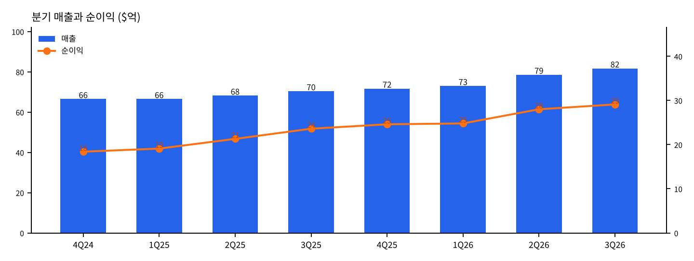
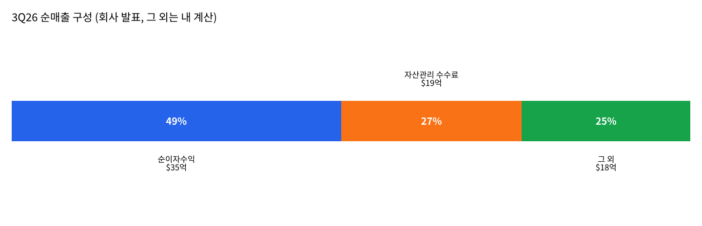
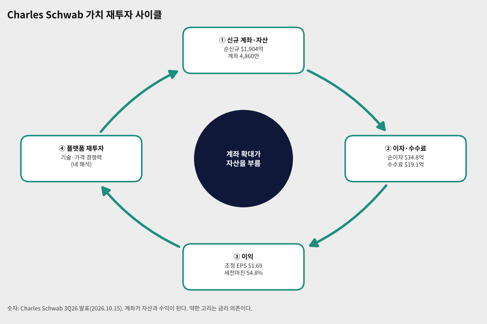

Schwab는 고객 예탁자산에 대한 이자와 수수료, 거래 수수료로 돈을 번다. 계좌가 늘수록 자산이 커지고 수익도 늘어난다.
| 항목 | 내용 |
|---|---|
| 종목 | Charles Schwab (SCHW) · NYSE · 금융(증권·자산관리) · 텍사스 웨스트레이크 |
| 최근 분기(3Q26) | 순매출 $71.7억, 조정 EPS $1.69 |
| 핵심 상품 | 브로커리지, 은행, 자산관리 |
| 직원 수 | 약 33,000명(트레이딩뷰) |
| 멀티플 | PER·PEG·P/S는 08~10 항목 표 참조 |
| 직책 | 인물 | 역할·특징 |
|---|---|---|
| CEO | 릭 워스터(Rick Wurster) | CEO |
| CFO | (확인 필요) | 회사 공개 자료 기준 확인 필요 |
경영 스타일: 규모와 저비용. 계좌 수와 자산 규모로 단위 비용을 낮춰 마진을 만든다.
브로커리지·은행·자산관리를 한 계정으로 묶어 고객을 오래 붙잡는다.
신규 계좌와 순신규자산을 늘려 수수료 기반을 키운다.
다음 실적발표는 세 가지 질문에 답하는 자리다.
1. 순신규자산이 연율 5%대를 지키나?
2. NIM 확대가 이어지나?
3. 거래 활동이 유지되나?
한 줄 판정 규칙: 첫 질문(순신규자산)이 이어지면 약한 고리(금리 의존)가 가려진다.
일정: 4Q26 실적은 2027.01.19 발표 예정이다.
| 분기 | 매출 | 순이익 | EPS | 조정 EPS | 특이 사항 |
|---|---|---|---|---|---|
| 4Q24 | $66.5억 | $18.4억 | 0.94 | 1.01 | |
| 1Q25 | $66.5억 | $19.1억 | 0.99 | 1.04 | |
| 2Q25 | $68.2억 | $21.3억 | 1.09 | 1.14 | |
| 3Q25 | $70.4억 | $23.6억 | 1.26 | 1.31 | |
| 4Q25 | $71.7억 | $24.6억 | 1.33 | 1.39 | |
| 1Q26 | $73.0억 | $24.8억 | 1.37 | 1.43 | |
| 2Q26 | $78.6억 | $28.0억 | 1.54 | 1.62 | |
| 3Q26 | $81.7억 | $29.1억 | 1.62 | 1.69 | 순매출 사상 최대 $71.7억 |
매출은 트레이딩뷰 스캐너의 분기 총매출이라 회사가 발표한 순매출과 다를 수 있다. 스캐너 매출은 총수익 기준이라 회사 발표 순매출($71.7억)과 다르다. 매출·순이익·EPS(GAAP 희석)는 트레이딩뷰 스캐너, 조정 EPS는 트레이딩뷰 실적 페이지의 Reported 값이다. 분기 정렬은 오래된 분기→최신이다.

흐름 요약: 최근 분기 매출은 $81.7억로 전년 동기 $70.4억 대비 +16.1%, 순이익은 $29.1억(전년 $23.6억)다. 최근 4분기 GAAP EPS는 $5.86, 조정 EPS는 $6.13다.
| 항목 | 내용 | 3Q26 금액 | 비고 |
|---|---|---|---|
| 순이자수익 | 예탁자산 이자 | $34.8억 | +14% |
| 자산관리·관리수수료 | 자문·펀드 수수료 | $19.1억 | +14% |
| 그 외(내 계산) | 거래 수수료 등 | $17.8억 | 순매출 $71.7억에서 위 항목을 뺀 값 |

순이자수익이 절반 가까이다. 금리 수준에 따라 수익이 달라진다.
Schwab는 개인 투자자가 저렴하게 투자하고 자산을 관리하도록 돕는 것을 목표로 한다.
| 축 | 내용 |
|---|---|
| 고객 | 총 계좌 4,860만 |
| 자산 | 고객 자산 $13.33조 |
| 수익성 | 조정 세전마진 54.8% |

| 이동평균 | 값 | 종가 대비 | 위치 |
|---|---|---|---|
| 5일선 | $92.41 | +0.2% | 종가 위 |
| 20일선 | $91.17 | +1.5% | 종가 위 |
| 50일선 | $95.91 | -3.5% | 종가 아래 |
| 100일선 | $100.81 | -8.2% | 종가 아래 |
| 200일선 | $96.83 | -4.4% | 종가 아래 |
52주 고가 $114.53(2026-08-24)·저가 $83.96(2026-05-28) 범위에서 종가 $92.56는 5일선, 20일선을 웃돌고 50일선, 100일선, 200일선은 밑돈다.
| 규칙 | 기준 | 현재 값 | 신호 |
|---|---|---|---|
| 장기 추세 필터 | 종가 vs 200일선 | $92.56 < $96.83 | 매도 |
| 중장기 교차 | 50일선 vs 200일선 | $95.91 < $96.83 | 매도 |
| 단기 교차 | 20일선 vs 50일선 | $91.17 < $95.91 | 매도 |
| 돈키언 채널 | 55일 고가 $110.72 / 저가 $87.37 | 중간값 $99.05 아래 | 매도 |
| 1개월 모멘텀 | 21거래일 수익률 | +1.8% (기준 $90.89) | 매수 |
| 3개월 모멘텀 | 63거래일 수익률 | -15.7% (기준 $109.79) | 매도 |
| 6개월 모멘텀 | 126거래일 수익률 | +2.7% (기준 $90.11) | 매수 |
| 12개월 모멘텀 | 252거래일 수익률 | +0.7% (기준 $91.91) | 매수 |
| 종합 (8개 평균) | -0.25 | 매도 |
해석: 매수 신호 3개(1개월 모멘텀, 6개월 모멘텀, 12개월 모멘텀), 매도 신호 5개(장기 추세 필터, 중장기 교차, 단기 교차, 돈키언 채널, 3개월 모멘텀). CTA 점수 -0.25(매도). 14일 ATR $2.25 (2.4%), 52주 고가 $114.53 · 저가 $83.96.
| 가격 | 기준 | 무엇이 바뀌나 |
|---|---|---|
| $110.72 | 55일 고가 | 돌파 시 채널 상단 갱신 |
| $109.79 | 3개월 모멘텀 기준가 | 종가가 이 가격 위면 3개월 신호 매수 |
| $99.05 | 돈키언 중간값 | 55일 채널 중간값 위/아래로 신호가 바뀜 |
| $96.83 | 200일선 | 종가가 이 선 위/아래인지로 장기 추세 신호가 바뀜 |
| $91.91 | 12개월 모멘텀 기준가 | 종가가 이 가격 위면 12개월 신호 매수 |
| $90.89 | 1개월 모멘텀 기준가 | 종가가 이 가격 위면 1개월 신호 매수 |
| $90.11 | 6개월 모멘텀 기준가 | 종가가 이 가격 위면 6개월 신호 매수 |
| $87.37 | 55일 저가 | 이탈 시 채널 하단 갱신 |
가격 수준은 신호가 바뀌는 기준선일 뿐 진입·청산 가격 제안이 아니다. 20일/50일 교차는 이동평균 자체가 움직여 단일 가격으로 표시하지 않았다. 일봉·주봉은 종가 기준 직접 계산(고저 데이터 미사용)이다.
| 악재 요인 | 내용 | 강도 |
|---|---|---|
| 금리 의존 | 순이자수익이 순매출의 절반 | 중간 |
| 거래 활동 변동 | 시장 거래량에 따라 수수료 변동 | 중간 |
| 규제·경쟁 | 수수료 경쟁(내 해석) | 참고 |
| 티커 | 회사 | PER(TTM) | PEG | P/S | EPS 성장(YoY) |
|---|---|---|---|---|---|
| SCHW | Charles Schwab | 15.1배 | 0.42 | 5.24배 | +36% |
| MS | Morgan Stanley | 14.4배 | 0.49 | 3.59배 | +29% |
| GS | Goldman Sachs | 12.6배 | 0.31 | 3.73배 | +41% |
| IBKR | Interactive Brokers | 29.2배 | 1.13 | 2.98배 | +26% |
| BLK | BlackRock | 27.7배 | 2.83 | 6.65배 | +10% |
비교 결론: Schwab의 PER 15.1배는 Morgan Stanley·Goldman Sachs보다 높고 Interactive Brokers·BlackRock보다 낮다. PEG 0.42는 Morgan Stanley(0.49)·Interactive Brokers(1.13)·BlackRock(2.83)보다 낮고 Goldman Sachs(0.31)보다 높다.
은행 계열이라 예금이 부채에 포함된다. 현금·부채는 트레이딩뷰 스캐너 값이다.
| 지표 | 값 | 출처 | 해석 |
|---|---|---|---|
| 현금·단기투자 | $566억 | 트레이딩뷰 스캐너(최근 분기) | |
| 총부채 | $400억 | 트레이딩뷰 스캐너(최근 분기) | |
| 순부채(부채−현금) | $-166억 | 내 계산 | 현금 대비 부채 부담 |
| 잉여현금흐름(TTM) | $-119억 | 트레이딩뷰 스캐너 | |
| TTM 매출 | $305억 | 트레이딩뷰 스캐너 |
| 기준 | 매출 | P/S | 비고 |
|---|---|---|---|
| 내 계산(종가 ÷ 최근 4분기 매출 합계) | $305.0억 | 5.24배 | 시총은 정렬용 데이터에서만 사용 |
| 동종(트레이딩뷰) | – | MS 3.59배 · GS 3.73배 · IBKR 2.98배 · BLK 6.65배 | 11.19 |
해석: 총부채가 크지만 고객 예금이 대부분이다(내 해석).
EBITDA는 영업활동의 현금 창출력을 보는 지표이고, PEG는 PER을 EPS 성장률로 나눈 값이다. EBITDA·FCF는 트레이딩뷰 TTM 값이다.
| 지표 | 값 | 산출 |
|---|---|---|
| EBITDA(TTM) | $168억 | 트레이딩뷰 스캐너 |
| EBITDA 마진 | 55.1% | EBITDA ÷ TTM 매출(내 계산) |
| FCF 마진 | -39.0% | FCF ÷ TTM 매출(내 계산) |
| PER(GAAP TTM) | 15.8배 | $92.56 ÷ $5.86 |
| PER(조정 TTM) | 15.1배 | $92.56 ÷ $6.13 |
| 방식 | PER | EPS 성장률 | PEG | 판정 |
|---|---|---|---|---|
| 조정 EPS (TTM $6.13) | 15.1배 | +36% ($4.50 → $6.13) | 0.42 | 적극 매수 |
| GAAP EPS (TTM $5.86) | 15.8배 | +37% ($4.28 → $5.86) | 0.43 | 적극 매수 |
판정: 조정 EPS 기준 PEG 0.42 → 0.5 이하(적극 매수 구간) PEG 기준은 1.0 이하 투자 적격, 0.5 이하 적극 매수다. EPS 성장률은 최근 4분기 EPS 합계를 직전 4분기 합계와 비교한 값(내 계산)이고, 일회성 항목이 있으면 조정 EPS 행을 함께 본다.

Charles Schwab의 사이클: 계좌가 자산을 키우고 수익이 플랫폼에 재투자돼 다음 계좌를 부른다.
| 고리 | 현재 숫자·근거 |
|---|---|
| ① 신규 계좌·자산 | 코어 순신규자산 $1,904억 · 총 계좌 4,860만 |
| ② 이자·수수료 | 순이자수익 $34.8억 · 자산관리 수수료 $19.1억 |
| ③ 이익 | 조정 EPS $1.69(+29%) · 조정 세전마진 54.8% |
| ④ 플랫폼 재투자 | 재투자 금액은 보고서에 없음(내 해석) |
사이클의 특징: 약한 고리는 금리 의존이다(순이자수익 비중이 크다). "(내 해석)"은 보고서 수치가 아닌 해석이다.